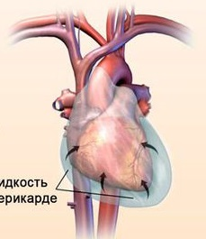

Что это?
Эндокардит — воспаление внутренней оболочки сердца — эндокарда. В большинстве случаев эндокардит не является самостоятельным заболеванием, а представляет собой частное проявление других заболеваний.
Симптомы
Проявления болезни складываются из симптомов инфекционного процесса, иммунных нарушений и признаков поражения клапанов сердца. Начало заболевания может быть как отчетливым, так и относительно постепенным.
Лечение
Основой терапии является возможно более раннее и достаточно длительное назначение эффективных бактерицидных доз адекватных антибиотиков. При неэффективности терапии показано хирургическое лечение.
Эндокардит
.png)
Миокардит
Что это?
Поражение сердечной мышцы, миокарда. Обычно поражения носят воспалительный характер.
Острый миокардит как самостоятельное заболевание описывается редко, чаще наблюдаются вторичные миокардиты в качестве осложнения инфекционных, инвазионных и токсических болезней, а также септических процессов.
Симптомы
Диффузный миокардит характеризуется дилатацией камер сердца и сердечной недостаточностью.
При инфекционном миокардите обычно доминируют симптомы инфекционного заболевания (лихорадка).
Слабость, утомляемость, одышка, нарушения ритма сердца.
Встречаются дискомфорт и разнообразные боли в грудной клетке.
Лечение
Основное внимание уделяется этиотропной терапии и лечению осложнений.
Обычно показана госпитализация.
Меры общего характера включают постельный режим, ингаляцию кислорода и приём нестероидных противовоспалительных средств (НПВС).
Лечение вирусного миокардита должно строиться с учётом фазы патологического процесса.
Перикардит
Что это?
Воспалительное поражение серозной оболочки сердца, наиболее часто висцерального листка, возникающее как осложнение различных заболеваний, редко как самостоятельная болезнь.
По этиологии выделяют инфекционные, аутоиммунные, травматические и идиопатические перикардиты.
Симптомы
Специфическая характерная клиника отсутствует. При выраженном процессе развивается клиника сердечной недостаточности.
Синдром поражения перикарда (сухой, выпотной, слипчивый перикардит) с острым или хроническим (рецидивирующим) течением.
Синдром острофазовых показателей (отражает реакцию организма на воспалительный процесс; наблюдается при остром течении болезни, чаще при сухом или выпотном перикардите).
Синдром иммунных нарушений (наблюдается при иммунном генезе поражения перикарда).
Лечение
Проводится лечение основного заболевания; при вирусном и идиопатическом назначаются противовоспалительные препараты (НПВС — ацетилсалициловая кислота, ибупрофен, индометацин), экстракт семян безвременника осеннего; с целью уменьшения объёма жидкости в перикарде — мочегонные препараты.
При угрозе тампонады выполняют чрескожную пункцию или дренирование под контролем УЗИ и эвакуацию содержимого.
При верификации диагноза сдавливающего (констриктивного) перикардита лечение неотложное и только оперативное (консервативное лечение не имеет эффекта). Операция — перикардэктомия, то есть удаление обоих листков спаянного перикарда.
Тотальная перикардэктомия гораздо более трудна для выполнения, чем удаление париетальной пластинки.
Возможные осложнения операции: кровоизлияние от перфорации спаечно-измененного перикарда, повышенное венозное давление в раннем послеоперационном периоде (возможно, провоцирует отёки головы и шеи).
Неадекватный по длительности период реконвалесценции может означать сопутствующее заболевание миокарда (сердечная недостаточность).
